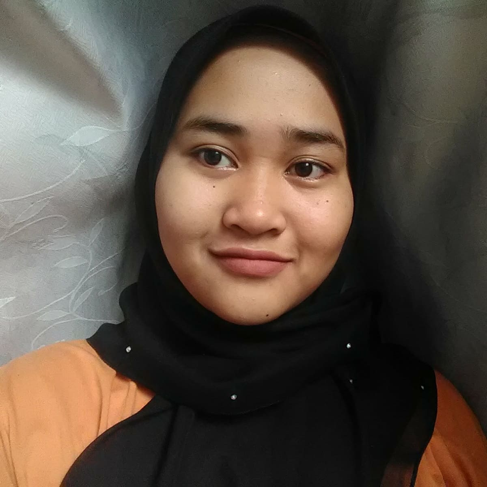
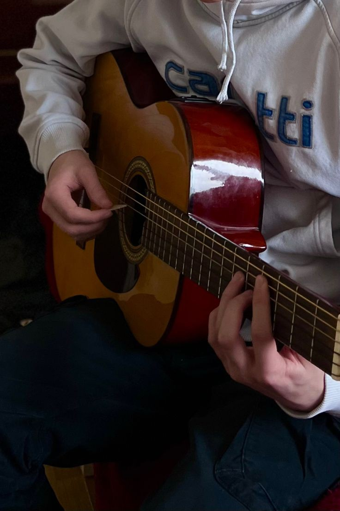
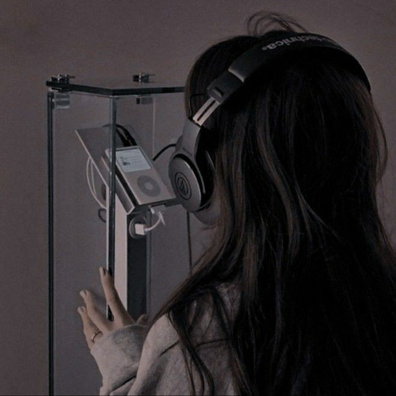
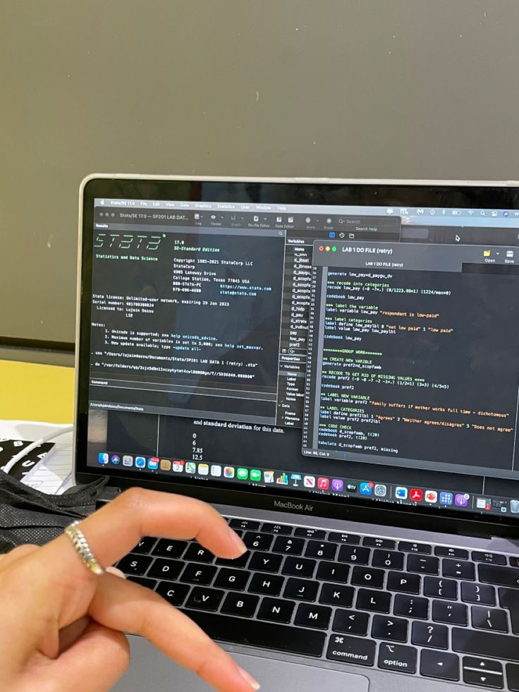
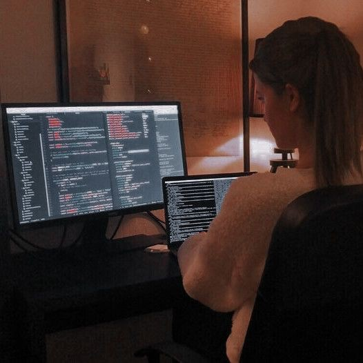

B I O D A T A
ABOUT ME

My name is Fara Wahida Binti Zulkpli. I am a final semester information management diploma student at the Universiti Teknologi MARA Kelantan branch. I am 21 year old this year. I already celebrated my birthday few days ago at 10 January 2023. Time passes so fast!!!. I was born in Besut District Hospital and grew up in Kluang, Johor Bharu. My family decided to relocate to Kelantan when I was 11 years old.
HOBBY
  
I don't enjoy having a definite activity on the days I spend. However, there are certain activities that I consider to be hobbies. In my leisure time, I like playing the guitar and singing songs of many genres and languages. These two things I will do every day, as well as when I am stressed while studying. For me, music helps me calm down a lot since I am a hot-tempered person, but the music and rhythm that I play with guitar sections helps me cool down a bit. When most of my friends were talk, they would ask me to sing, and I was always pleased to play the guitar and sing for them. I also enjoy cooking and reading. Oh, and I almost forgot about an activity that I enjoy but that my mother always criticizes for being a waste of time lol. I enjoy purchasing and collecting kpop albums. Perhaps the price is high, but because of my interest, I am prepared to put money in this. I generate my own income from my collection of kpop music since I sell old albums when I grow tired of them.
AMBITION
 
I may have had numerous ambitions as a kid, but as I grew older, I understood that all of my dreams were hard to accomplish since I was someone who quickly gave up. So, there is no proper answer to the question what my ambitions are, but I really want to get into computing because this profession provides many work options for me and it intrigues me to study it more extensively. Please pray for me to succeed and not give up so quickly in order to reach my dream.